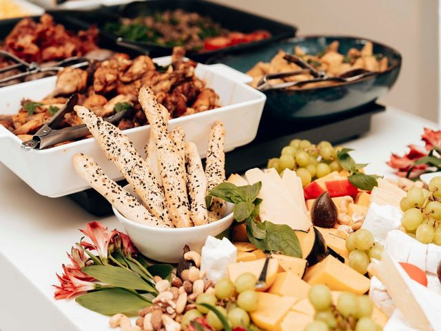

VOCABULARY · 主題 2000 字 PART 2 UNIT 17
Places & locations．地方與位置
方向、各種商店與場所、城鄉，共 22 個。很多地方是兩個字組成的：convenience store、fire station、movie theater。
共 22 個單字．點 🔊 聽發音
1positionn.
位置；姿勢
in position 在適當位置
Change your sitting position every hour.每小時換一下坐姿。
2backwardsadv.
向後；倒著
= backward；↔ forward
Can you say the alphabet backwards?你能把字母倒著唸嗎？

3centraladj.
中央的；中心的
center → central
Our hotel is in central Taipei.我們的飯店在台北市中心。

4forwardadv.
向前
look forward to 期待
Take two steps forward.向前走兩步。

5buffetn.
自助餐
t 不發音，讀 [bʌˈfe]
The hotel has a big breakfast buffet.那家飯店有豐盛的自助早餐。
6cafeterian.
自助餐廳；學生餐廳
We eat lunch in the school cafeteria.我們在學校餐廳吃午餐。

7convenience storen.
便利商店
convenient 方便的
There is a convenience store on every corner in Taiwan.台灣每個街角都有便利商店。

8culture centern.
文化中心
culture 文化
There is a concert at the culture center tonight.今晚文化中心有一場音樂會。
9drugstoren.
藥房；藥妝店
drug 藥 + store
You can buy cold medicine at the drugstore.你可以在藥局買感冒藥。

10fast food restaurantn.
速食餐廳
Let's grab a burger at the fast food restaurant.我們去速食餐廳買個漢堡吧。

11fire stationn.
消防局；消防隊
firefighter 消防員
The fire station is next to the police station.消防局在警察局隔壁。

12flower shopn.
花店
florist 花商
Dad bought roses at the flower shop.爸爸在花店買了玫瑰。
13malln.
購物中心；商場
shopping mall
We went shopping at the mall on Sunday.我們星期天去購物中心逛街。

14men's roomn.
男廁
Excuse me, where is the men's room?不好意思，男廁在哪裡？

15women's roomn.
女廁
= ladies' room
The women's room is on the second floor.女廁在二樓。

16movie theatern.
電影院
= cinema
The movie theater is full on Saturday nights.星期六晚上電影院都客滿。

17stationery storen.
文具店
stationery 文具（不可數）
I bought a new eraser at the stationery store.我在文具店買了新橡皮擦。

18waterfalln.
瀑布
water + fall
We hiked to a beautiful waterfall.我們健行到一座美麗的瀑布。

19downtownn. / adv.
市中心；鬧區；在市區
go downtown 到市區去
We took the bus downtown to see a movie.我們搭公車到市區看電影。
20villagen.
村莊
villager 村民
My grandparents live in a small village.我的爺爺奶奶住在一個小村莊。

21localadj. / n.
當地的；本地人
local food 當地美食
Let's try some local food in Tainan.我們在台南吃些當地美食吧。
22internationaladj.
國際的
inter- 之間 + national
English is an international language.英文是國際語言。
FOCUS
去哪裡買？
| 想買 | 去哪裡 |
|---|---|
| 感冒藥 | drugstore |
| 橡皮擦、尺 | stationery store |
| 玫瑰 | flower shop |
| 零食、飲料（24 小時） | convenience store |
stationery（文具）和 stationary（不動的）發音一樣，拼法不同。
FOCUS
方向
| 字 | 意思 |
|---|---|
| forward | 向前 |
| backwards | 向後 |
| central | 中央的 |
| downtown | 市中心 |
go downtown 不加 to（downtown 在這裡是副詞）。